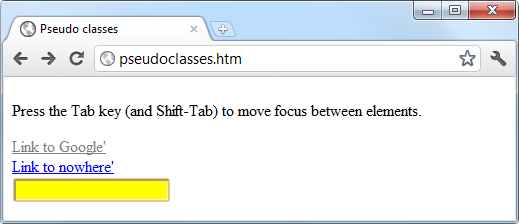

Introduction to CSS
Using CSS (Cascading Style Sheets) , you can apply styles to your web pages to make them look exactly how you want. This works because CSS is connected to the DOM (Document Object Model), which I explained in Chapter 13.
With CSS and its integration with the DOM, you can quickly and easily restyle any element. For example, if you don’t like the default look of the <h1> , <h2> , and other heading tags, you can assign new styles to override the default settings for the font family and size used, or whether bold or italics should be set, and many more properties too.
One way you can add styling to a web page is by inserting the required statements into the head of a web page between the <head> and </head> tags. So, to change the style of the <h1> tag, you might use the following code (I’ll explain the syntax later):
<style>
h1 { color:red; font-size:3em; font-family:Arial; }
</style>
Within an HTML page, this might look like Example 18-1 (see Figure 18-1 ), which, like all the examples in this chapter, uses the standard HTML5 DOCTYPE declaration.
Example 18-1. A simple HTML page
<!DOCTYPE html>
<html>
<head>
<title>Hello World</title>
<style>
h1 { color:red; font-size:3em; font-family:Arial; }
</style>
</head>
<body>
<h1>Hello there</h1>
</body>
</html>

Figure 18-1. Styling a tag, with the original style shown in the inset
Importing a Style Sheet
When you wish to style a whole site, rather than a single page, a better way to manage style sheets is to move them completely out of your web pages to separate files, and then import the ones you need. This lets you apply different style sheets for different layouts (such as web and print), without changing the HTML.
There are a couple of different ways you can achieve this, the first of which is by using the CSS @import directive, like this:
<style>
@import url('styles.css');
</style>
This statement tells the browser to fetch a style sheet with the name styles.css. The @import command is quite flexible in that you can create style sheets that themselves pull in other style sheets, and so on. Just make sure that there are no <style> or </style> tags in any of your external style sheets, or they will not work.
Importing CSS from Within HTML
You can also include a style sheet with the HTML <link> tag, like this:
<link rel='stylesheet' type='text/css' href='styles.css'>
This has the exact same effect as the @import directive, except that <link> is an HTML-only tag and is not a valid style directive, so it cannot be used from within one style sheet to pull in another, and also cannot be placed within a pair of <style>...</style> tags.
Just as you can use multiple @import directives within your CSS to include multiple external style sheets, you can also use as many <link> elements as you like in your HTML.
Embedded Style Settings
There’s also nothing stopping you from individually setting or overriding certain styles for the current page on a case-by-case basis by inserting style declarations directly within HTML, like this (which results in italic, blue text within the tags):
<div style='font-style:italic; color:blue;'>Hello there</div>
But this should be reserved only for the most exceptional circumstances, as it breaks the separation of content and presentation.
Using IDs
A better solution for setting the style of an element is to assign an ID to it in the HTML, like this:
<div id='welcome'>Hello there</div>
This states that the contents of the <div> with the ID welcome should have applied to them the style defined in the welcome style setting. The matching CSS statement for this might look like the following
#welcome { font-style:italic; color:blue; }
Note the use of the # symbol, which specifies that only the ID with the name welcome should be styled with this statement.
Using Classes
If you would like to apply the same style to many elements, you do not have to give each one a different ID because you can specify a class to manage them all, like this:
<div class='welcome'>Hello</div>
This states that the contents of this element (and any others that use the class) should have applied to them the style defined in the welcome class. Once a class is applied, you can use the following rule, either in the page header or within an external style sheet for setting the styles for the class:
.welcome { font-style:italic; color:blue; }
Instead of the # symbol, which is reserved for IDs, class statements are prefaced with a. (period).
Using Semicolons
In CSS, semicolons are used to separate multiple CSS statements on the same line. But if there is only one statement in a rule (or in an inline style setting within an HTML tag), you can omit the semicolon, as you can for the final statement in a group.
However, to avoid hard-to-find CSS errors, you may prefer to always use a semicolon after every CSS setting. You can then copy and paste them, and otherwise modify properties, without worrying about removing semicolons where they aren’t strictly necessary or having to add them where they are required.
CSS Rules
Each statement in a CSS rule starts with a selector , which is the item to which the rule will be applied. For example, in this assignment, h1 is the selector being given a font size 240 percent larger than the default:
h1 { font-size:240%; }
font-size is a property. Providing a value of 240% to the font-size property of the selector ensures that the contents of all <h1>...</h1> pairs of tags will be displayed at a font size that is 240 percent of the default size. All changes in rules must be within the { and } symbols that follow the selector. In font-size:240%; the part before the : (colon) is the property, while the remainder is the value applied to it.
Last comes a ; (semicolon) to end the statement. In this instance, because font-size is the last property in the rule, the semicolon is not required (but it would be if another assignment were to follow).
Multiple Assignments
You can create multiple style declarations in a couple of different ways. First, you can concatenate them on the same line, like this: h1 { font-size:240%; color:blue; } This adds a second assignment that changes the color of all
<h1>
headings to blue. You can also place the assignments one per line, like the following:
h1 { font-size:240%;color:blue; }
Or you can space out the assignments a little more, so that they line up below each other in a column at the colons, like this:
h1 {
font-size:240%;
color :blue;
}
This way, you can easily see where each new set of rules begins, because the selector is always in the first column, and the assignments that follow are neatly lined up with all property values starting at the same horizontal offset. In the preceding examples, the final semicolon is unnecessary, but should you ever want to concatenate any such groups of statements into a single line, it is very quick to do with all semicolons already in place.
You can specify the same selector as many times as you want, and CSS combines all the properties. So the previous example could also be specified as follows:
h1 { font-size: 240%; }
h1 { color : blue; }
There is no right or wrong way to lay out your CSS, but I recommend that you at least try to keep each block of CSS consistent with itself, so that other people can take it in at a glance.
What if you specified the same property to the same selector twice?
h1 { color : red; }
h1 { color : blue; }
The last value specified—in this case, blue—would apply. In a single file, repeating the same property for the same selector would be pointless, but such repetition happens frequently in real-life web pages when multiple style sheets are applied. It’s one of the valuable features of CSS, and where the term cascading comes from.
Using Comments
It is a good idea to comment your CSS rules, even if you describe only the main groups of statements rather than all or most of them. You can do this in two different ways. First, you can place a comment within a pair of /*...*/ tags, like this:
/* This is a CSS comment */
Or you can extend a comment over many lines, like this:
/*
A Multi
line
comment
*/
When using multiline comments, note that you cannot nest single- line (or any other) comments within them. Doing so can lead to unpredictable errors.
Style Types
There are a number of different style types, ranging from the default styles set up by your browser (and any user styles you may have applied in your browser to override its defaults), through inline or embedded styles, to external style sheets. The styles defined in each type have a hierarchy of precedence, from low to high.
Default Styles
The lowest level of style precedence is the default styling applied by a web browser. These styles are created as a fallback for when a web page doesn’t have any styles, and they are intended to be a generic set of styles that will display reasonably well in most instances.
Pre-CSS, these were the only styles applied to a document, and only a handful of them could be changed by a web page (such as font face, color, and size, and a few element sizing arguments).
User Styles
These are the next highest precedence of styles, and they are supported by most modern browsers but are implemented differently by each. If you would like to learn how to create your own default styles for browsing, use a search engine to enter your browser name followed by “user styles” (for example, “Firefox user styles” or “Opera user styles”) to find out how. Figure 18-2 shows a user style sheet being applied to Microsoft Internet Explorer.
Figure 18-2. Applying a user style to Internet Explorer
If a user style is assigned that has already been defined as a browser default, it will then override the browser’s default setting. Any styles not defined in a user style sheet will retain their default values as set up in the browser.
External Style Sheets
The next types of styles are those assigned in an external style sheet. These settings will override any assigned either by the user or by the browser. External style sheets are the recommended way to create your styles because you can produce different style sheets for different purposes such as styling for general web use, for viewing on a mobile browser with a smaller screen, for printing purposes, and so on. Just apply the one needed for each type of media when you create the web page.
Internal Styles
Then there are internal styles, which you create within <style>... </style> tags, and which take precedence over all the preceding style types. At this point, though, you are beginning to break the separation between styling and content, as any external style sheets loaded in at the same time will have a lower precedence.
Inline Styles
Finally, inline styles are where you assign a property directly to an element. They have the highest precedence of any style type, and are used like this:
<a href="http://google.com" style="color:green;">Visit Google</a>
In this example, the link specified will be displayed in green, regardless of any default or other color settings applied by any other type of style sheet, whether directly to this link or generically for all links.
When you use this type of styling, you are breaking the separation between layout and content; therefore, it is recommended that you do so only when you have a very good reason.
CSS Selectors
The means by which you access one or more elements is called selection , and the part of a CSS rule that does this is known as a selector. As you might expect, there are many varieties of selector.
The Type Selector
The type selector works on types of HTML elements such as <p> or <i>. For example, the following rule will ensure that all text within <p>...</p> tags is fully justified:
p { text-align:justify; }
The Descendant Selector
Descendant selectors let you apply styles to elements that are contained within other elements. For example, the following rule sets all text within <b>... </b> tags to red, but only if they occur within <p>... </p> tags (like this: <p><b>Hello</b> there</p> ):
p b { color:red; }
Descendant selectors can continue nesting indefinitely, so the following is a perfectly valid rule to make the text blue within bold text, inside a list element of an unordered list:
ul li b { color:blue; }
As a practical example, suppose you want to use a different numbering system for an ordered list that is nested within another ordered list. You can achieve this in the following way, which will replace the default numeric numbering (starting from 1 ) with lowercase letters (starting from a ):
<!DOCTYPE html>
<html>
<head>
<style>
ol ol { list-style-type:lower-alpha; }
</style>
</head>
<body>
<ol>
<li>One</li>
<li>Two</li>
<li>Three
<ol>
<li>One</li>
<li>Two</li>
<li>Three</li>
</ol>
</li>
</ol>
</body>
</html>
The result of loading this HTML into a web browser is as follows, in which you can see that the second list elements display differently:
1. One
2. Two
3. Three
a. One
b. Two
c. Three
The Child Selector
The child selector is similar to the descendant selector but is more restrictive about when the style will be applied, by selecting only those elements that are direct children of another element. For example, the following code uses a descendant selector that will change any bold text within a paragraph to red, even if the bold text is itself within italics (like this <p><i><b>Hello</b> there</i></p> ):
p b { color:red; }
In this instance, the word Hello displays in red. However, when this more general type of behavior is not required, a child selector can be used to narrow the scope of the selector. For example, the following child selector will set bold text to red only if the element is a direct child of a paragraph, and is not itself contained within another element:
p > b { color:red; }
Now Hello will not change color because it is not a direct child of the paragraph. For a practical example, suppose you wish to make bold only those <li> elements that are direct children of <ol> elements. You can achieve this as follows, where the <li> elements that are direct children of <ul> elements are not made bold:
<!DOCTYPE html>
<html>
<head>
<style>
ol > li { font-weight:bold; }
</style>
</head>
<body>
<ol>
<li>One</li>
<li>Two</li>
<li>Three</li>
</ol>
<ul>
<li>One</li>
<li>Two</li>
<li>Three</li>
</ul>
</body>
</html>
The result of loading this HTML into a browser will be as follows:
1. One
2. Two
3. Three
•One
•Two
•Three
The ID Selector
If you give an element an ID name (like this: <div id='mydiv'> ), you can directly access it from CSS in the following way, which changes all text in the element to italic:
#mydiv { font-style:italic; }
IDs can be used only once within a document, so only the first occurrence found will receive the new property value assigned by a CSS rule. But in CSS you can directly reference any IDs that have the same name, as long as they occur within different element types, like this:
<div id='myid'>Hello</div> <span id='myid'>Hello</span>
Because IDs normally apply only to unique elements, the following rule will apply an underline to only the first occurrence of myid :
#myid { text-decoration:underline; }
However, you can ensure that CSS applies the rule to both occurrences, like this:
span#myid { text-decoration:underline; }
div#myid { text-decoration:underline; }
Or more succinctly, like this (see “Selecting by Group” on page 425 ):
span#myid, div#myid { text-decoration:underline; }
I don’t recommend using this form of selection because any JavaScript that also must access these elements cannot easily do so because the commonly used getElementByID() function will return only the first occurrence. To reference any other instances, a program would have to search through the whole list of elements in the document—a trickier task to undertake. So it’s generally better to always use unique ID names.
The Class Selector
When there are a number of elements in a page that you want to share the same styling, you can assign them all the same class name (like this: <span class='my class'> ); then, create a single rule to modify all those elements at once, as in the following rule, which creates a 10-pixel left margin offset for all elements using the class:
.myclass { margin-left:10px; }
In modern browsers, you can have HTML elements use more than one class by separating the class names with spaces, like this: <span class='class1 class2 class3'>. Remember, though, that some very old browsers allow only a single class name in a class argument.
You can narrow the scope of action of a class by specifying the types of elements to which it should apply. For example, the following rule applies the setting only to paragraphs that use the class main :
p.main { text-indent:30px; }
In this example, only paragraphs using the class main (like this: <p class="main"> ) will receive the new property value. Any other element types that may try to use the class (such as <div class="main"> ) will not be affected by this rule.
The Attribute Selector
Many HTML tags support attributes, and using this type of selector can save you from having to use IDs and classes to refer to them. For example, you can directly reference attributes in the following manner, which sets all elements with the attribute type="submit" to a width of 100 pixels:
[type="submit"] { width:100px; }
If you wish to narrow down the scope of the selector to, for example, only form input elements with that attribute type, you could use the following rule instead:
form input[type="submit"] { width:100px; }
Attribute selectors also work on IDs and classes so that, for example, [class~="classname"] works exactly like the class selector.classname (except that the latter has a higher precedence). Likewise, [id="idname"] is equivalent to using the ID selector #idname. The class and ID selectors prefaced by # and. can therefore be viewed as shorthand for attribute selectors, but with a higher precedence. The ~= operator matches an attribute even if it is one of a space-separated group of attributes.
The Universal Selector
The * wildcard or universal selector matches any element, so the following rule will make a complete mess of a document by giving a green border to all of its elements:
* { border:1px solid green; }
It’s therefore unlikely that you will use the * on its own, but as part of a compound rule it can be very powerful. For example, the following rule will apply the same styling as the preceding one, but only to all paragraphs that are subelements of the element with the ID boxout , and only as long as they are not direct children:
#boxout * p {border:1px solid green; }
Let’s look at what’s going on here. The first selector following #boxout is a * symbol, so it refers to any element within the boxout object. The following p selector then narrows down the selection focus by changing the selector to apply only to paragraphs (as defined by the p ) that are subelements of elements returned by the * selector. Therefore, this CSS rule performs the following actions (in which I use the terms object and element interchangeably):
1. Find the object with the ID of boxout.
2. Find all subelements of the object returned in step 1.
3. Find all p subelements of the objects returned in step 2 and, since this is the final selector in the group, also find all p sub- and sub-subelements (and so on) of the objects returned in step 2.
4. Apply the styles within the { and } characters to the objects returned in step 3.
The net result of this is that the green border is applied only to paragraphs that are grandchildren (or great-grandchildren, and so on) of the main element.
Selecting by Group
Using CSS, you can apply a rule to more than one element, class, or any other type of selector at the same time by separating the selectors with commas. So, for example, the following rule will place a dotted orange line underneath all paragraphs, the element with the ID of idname , and all elements that use the class classname :
p, #idname,.classname { border-bottom:1px dotted orange; }
Figure 18-3 shows various selectors in use, with the rules applied to them alongside.

Figure 18-3. Some HTML and the CSS rules used by it
The CSS Cascade
One of the most fundamental things about CSS properties is that they cascade, which is why they are called Cascading Style Sheets. But what does this mean?
Cascading is a method used to resolve potential conflicts between the various types of style sheet a browser supports, and apply them in order of precedence by who created them, the method used to create the style, and the types of properties selected.
Style Sheet Creators
There are three main types of style sheet supported by all modern browsers. In order of precedence from high to low, they are as follows:
1. Those created by a document’s author
2. Those created by the user
3. Those created by the browser
These three sets of style sheets are processed in reverse order. First, the defaults in the web browser are applied to the document. Without these defaults, web pages that don’t use style sheets would look terrible. They include the font face, size, and color; element spacing; table borders and spacing; and all the other reasonable standards a user would expect.
Next, if the user has created any styles to use instead of the standard ones, these are applied, replacing any of the browser’s default styles that may conflict. Last, any styles created by the current document’s author are then applied, replacing any that have been created either as browser defaults or by the user.
Style Sheet Methods
Style sheets can be created via three different methods. In order of precedence from high to low, they are as follows:
1. As inline styles
2. In an embedded style sheet
3. As an external style sheet
Again, these methods of style sheet creation are applied in reverse order of precedence. Therefore, all external style sheets are processed first, and their styles are applied to the document.
Next, any embedded styles (within <style>... </style> tags) are processed, and any that conflict with external rules are given precedence and will override them. Last, any styles applied directly to an element as an inline style (such as <div style="...">... </div> ) are given the highest precedence, and override all previously assigned properties.
Style Sheet Selectors
There are three different ways of selecting elements to be styled. Going from highest to lowest order of precedence, they are as follows:
1. Referencing by individual ID or attribute selector
2. Referencing in groups by class
3. Referencing by element tags (such as <p> or <b> )
Selectors are processed according to the number and types of elements affected by a rule, which is a little different from the previous two methods for resolving conflicts. This is because rules do not have to apply only to one type of selector at a time, and may reference many different selectors.
Therefore, we need a method to determine the precedence of rules that can contain any combinations of selectors. It does this by calculating the specificity of each rule by ordering them from the widest to narrowest scope of action.
Calculating Specificity
We calculate the specificity of a rule by creating three-part numbers based on the selector types in the preceding numbered list. These compound numbers start off looking like [0,0,0]. When processing a rule, each selector that references an ID increments the first number by 1, so that the compound number would become [1,0,0].
Let’s look at the following rule, which has seven references, with three of them to the IDs #heading , #main , and #menu. So the compound number becomes [3,0,0].
#heading #main #menu.text.quote p span {
// Rules go here;
}
Then the number of classes in the selector is placed in the second part of the compound number. In this example, there are two of them (.text and.quote ), so the compound number becomes [3,2,0].
Finally, all selectors that reference element tags are counted, and this number is placed in the last part of the compound number. In the example, there are two ( p and span ), so the final compound number becomes [3,2,2] , which is all that is needed to compare this rule’s specificity with another, such as the following:
#heading #main.text.quote.news p span {
// Rules go here;
}
Here, although seven elements are also referenced, there are now only two ID references, but three class references, which results in the compound number [2,3,2]. Since 322 is greater than 232, the former example has precedence over the latter.
In cases where there are nine or fewer of each type in a compound number, you can convert it directly to a decimal number, which in this case is 352. Rules with a lower number than this will have lower precedence, and those with a higher number will have greater precedence. Where two rules share the same value, the most recently applied one wins.
Using a different number base
Where there are more than nine of a type in a number, you have to work in a higher number base. For example, you can’t convert the compound number [11,7,19] to decimal by simply concatenating the three parts. Instead, you can convert the number to a higher base such as base 20 (or higher if there are more than 19 of any type).
To do this, multiply the three parts out and add the results like this, starting with the
20 × 19 = 380
20×20 × 7 = 2800
20×20×20 × 11 = 88000
Total in decimal = 91180
On the left, replace the values of 20 with the base you are using. Once all of the compound numbers of a set of rules are converted from this base to decimal, it is easy to determine the specificity, and therefore the precedence, of each.
Thankfully, the CSS processor handles all of this for you, but knowing how it works helps you to properly construct rules and understand what precedence they will have.
If all this precedence calculation sounds rather complicated, you’ll be pleased to know that in most cases you can usually get by with this simple rule of thumb: in general, the fewer elements that there are to be modified, and the more specific they are, the greater the precedence that is given to a rule.
Some rules are more equal than others
Where two or more style rules are exactly equivalent, only the most recently processed rule will take precedence. However, you can force a rule to a higher precedence than other equivalent rules by using the !important declaration, like this:
p { color:#ff0000 !important; }
When you do this, all previous equivalent settings are overridden (even ones using ! important ) and any equivalent rules that are processed later will be ignored. So, for example, the second of the two following rules would normally take precedence, but because of the use of !important in the prior assignment, the second one is ignored:
p { color:#ff0000 !important; }
p { color:#ffff00 }
User style sheets can be created for specifying default browser styles, and they may use the !important declaration, in which case the user’s style setting will take precedence over the same properties specified in the current web page. However, on very old browsers using CSS 1, this feature isn’t supported.
The Difference Between Div and Span Elements
Both <div> and <span> elements are types of containers, but with some different qualities. By default, a <div> element has infinite width (at least to the browser edge), which you can see by applying a border to one, like this:
<div style="border:1px solid green;">Hello</div>
A <span> element, however, is only as wide as the text it contains. Therefore, the following line of HTML creates a border only around the word Hello , which does not extend to the righthand edge of the browser.
<span style="border:1px solid green;">Hello</span>
Also, <span> elements follow text or other objects as they wrap around, and can therefore have a complicated border. For example, in Example 18-2 , I used CSS to make the background of all <div> elements yellow, to make all <span> elements cyan, and to add a border to both, before then creating a few example <span> and <div> sections.
Example 18-2. Div and span example
<!DOCTYPE html>
<html>
<head>
<title>Div and span example</title>
<style>
div, span { border :1px solid black; }
div { background-color:yellow; }
span { background-color:cyan; }
</style>
</head>
<body>
<div>This text is within a div tag</div>
This isn't. <div>And this is again.</div><br>
<span>This text is inside a span tag.</span>
This isn't. <span>And this is again.</span><br><br>
<div>This is a larger amount of text in a div that wraps around
to the next line of the browser</div><br>
<span>This is a larger amount of text in a span that wraps around
to the next line of the browser</span>
</body>
</html>
Figure 18-4 shows what this example looks like in a web browser. Although it is printed only in shades of gray in this book, the figure clearly shows how <div> elements extend to the righthand edge of a browser, and force the following content to appear at the start of the first available position below them.

Figure 18-4. A variety of elements of differing width
The figure also shows how <span> elements keep to themselves and take up only the space required to hold their content, without forcing subsequent content to appear below them.
For example, in the bottom two examples of the figure, you can also see that when <div> elements wrap around the screen edge, they retain a rectangular shape, whereas <span> elements simply follow the flow of the text (or other contents) they contain.
Since <div> tags can be only rectangular, they are better suited for containing objects such as images, boxouts, quotations, and so on, while <span> tags are best used for holding text or other attributes that are placed one after another inline, and which should flow from left to right (or right to left in some languages).
Measurements
CSS supports an impressive range of units of measurement, enabling you to tailor your web pages precisely to specific values, or by relative dimensions. The ones I generally use (and believe you will also find the most useful) are pixels, points, ems, and percent, but here’s the complete list:
Pixels
The size of a pixel varies according to the dimensions and pixel depth of the user’s
monitor. One pixel equals the width/height of a single dot on the screen, and so this
measurement is best suited to monitors. For example:
.classname { margin:5px; }
Points
A point is equivalent in size to 1/72 of an inch. The measurement comes from a print
design background and is best suited for that medium, but is also commonly used on
monitors. For example:
.classname { font-size:14pt; }
Inches
An inch is the equivalent of 72 points and is also a measurement type best suited for
print. For example:
.classname { width:3in; }
Centimeters
Centimeters are another unit of measurement best suited for print. One centimeter is
a little over 28 points. For example:
.classname { height:2cm; }
Millimeters
A millimeter is 1/10 of a centimeter (or almost 3 points). Millimeters are another
measure best suited to print. For example:
classname { font-size:5mm; }
Picas
A pica is another print typographic measurement, which is equivalent to 12 points.
For example:
.classname { font-size:1pc; }
Ems
An em is equal to the current font size and is therefore one of the more useful meas
urements for CSS since it is used to describe relative dimensions. For example:
.classname { font-size:2em; }
Exs
An ex is also related to the current font size; it is equivalent to the height of a
lowercase letter
x
. This is a less popular unit of measurement that is most often
used as a good approximation for helping to set the width of a box that will con
tain some text. For example:
.classname { width:20ex; }
Percent
This unit is related to the em in that it is exactly 100 times greater (when used on a
font). Whereas 1 em equals the current font size, the same size is 100 in percent.
When not relating to a font, this unit is relative to the size of the container of the
property being accessed. For example:
.classname { height:120%; }
Figure 18-5 shows each of these measurement types in turn being used to display text in almost identical sizes.
Figure 18-5. Different measurements that display almost the same
Fonts and Typography
There are four main font properties that you can style using CSS: family , style , size , and weight. Between them, you can fine-tune the way text displays in your web pages and/or when printed.
font-family
The font-family property assigns the font to use. It also supports listing a variety of fonts in order of preference from left to right, so that styling can fall back gracefully when the user doesn’t have the preferred font installed. For example, to set the default font for paragraphs, you might use a CSS rule such as this:
p { font-family:Verdana, Arial, Helvetica, sans-serif; }
Where a font name is made up of two or more words, you must enclose the name in quotation marks, like this:
p { font-family:"Times New Roman", Georgia, serif; }
Because they should be available on virtually all web browsers and operating systems, the safest font families to use on a web page are Arial , Helvetica , Times New Roman , Times , Courier New , and Courier. The Verdana , Georgia , Comic Sans MS , Trebuchet MS , Arial Black , and Impact fonts are safe for Mac and PC use, but may not be installed on other operating systems such as Linux. Other common but less safe fonts are Palatino , Garamond , Bookman , and Avant Garde. If you use one of the less safe fonts, make sure you offer fallbacks of one or more safer fonts in your CSS so that your web pages will degrade gracefully on browsers without your preferred fonts. Figure 18-6 shows these two sets of CSS rules being applied.
Figure 18-6. Selecting font families
font-style
With the font-style property, you can choose to display a font normally, in italics, or obliquely. The following rules create three classes ( normal , italic , and oblique ) that can be applied to elements to create these effects:
.normal { font-style:normal; }
.italic { font-style:italic; }
.oblique { font-style:oblique; }
font-size
As described in the earlier section on measurements, there are a large number of ways you can change a font’s size. But these all boil down to two main types: fixed and relative. A fixed setting looks like the following rule, which sets the default paragraph font size to 14 point:
p { font-size:14pt; }
Alternatively, you may wish to work with the current default font size, using it to style various types of text such as headings. In the following rules, relative sizes of some headers are defined, with the <h4> tag starting off 20 percent bigger than the default, and with each greater size another 40 percent larger than the previous one:
h1 { font-size:240%; }
h2 { font-size:200%; }
h3 { font-size:160%; }
h4 { font-size:120%; }
Figure 18-7 shows a selection of font sizes in use.

Figure 18-7. Setting four heading sizes and the default paragraph size
font-weight
Using the font-weight property, you can choose how boldly to display a font. It supports a number of values, but the main ones you will use are likely to be normal and bold , like this:
.bold { font-weight:bold; }
Managing Text Styles
Regardless of the font in use, you can further modify the way text displays by altering its decoration, spacing, and alignment. There is a crossover between the text and font properties, though, in that effects such as italics or bold text are achieved via the font-style and font-weight properties, while others such as underlining require the text-decoration property.
Decoration
With the text-decoration property, you can apply effects to text such as underline , line-through , overline , and blink. The following rule creates a new class called over that applies overlines to text (the weight of over, under, and through lines will match that of the font):
.over { text-decoration:overline; }
In Figure 18-8 you can see a selection of font styles, weight, and decorations.
Figure 18-8. Examples of the styles and decoration rules available
Spacing
A number of different properties allow you to modify line, word, and letter spacing. For example, the following rules change the line spacing for paragraphs by modifying the line-height property to be 25 percent greater, the word-spacing property is set to 30 pixels, and letter-spacing is set to 3 pixels:
p {
line-height :125%;
word-spacing :30px;
letter-spacing:3px;
}
Alignment
There are four types of text alignment available in CSS: left , right , center , and jus tify. In the following rule, default paragraph text is set to full justification:
p { text-align:justify; }
Transformation
There are four properties available for transforming your text: none , capitalize , uppercase , and lowercase. The following rule creates a class called upper that will ensure that all text is displayed in uppercase when it is used:
.upper { text-transform:uppercase; }
Indenting
Using the text-indent property, you can indent the first line of a block of text by a specified amount. The following rule indents the first line of every paragraph by 20 pixels, although a different unit of measurement or a percent increase could also be applied:
p { text-indent:20px; }
In Figure 18-9 the following rules have been applied to a section of text:
p { line-height :150%;
word-spacing :10px;
letter-spacing:1px;
}
.justify { text-align :justify; }
.uppercase { text-transform:uppercase; }
.indent { text-indent :20px; }

Figure 18-9. Indenting, uppercase, and spacing rules being applied
CSS Colors
You can apply colors to the foreground and background of text and objects by using the color and background-color properties (or by supplying a single argument to the background property). The colors specified can be one of the named colors (such as red or blue ), colors created from hexadecimal RGB triplets (such as #ff0000 or #0000ff ), or colors created using the rgb CSS function.
The standard 16 color names as defined by the W3C ( http://www.w3.org/ ) standards organization are aqua , black , blue , fuchsia , gray , green , lime , maroon , navy , olive , purple , red , silver , teal , white , and yellow. The following rule uses one of these names to set the background color for an object with the ID of object.
#object { background-color:silver; }
In this rule, the foreground color of text in all <div> elements is set to yellow (because on a computer display, hexadecimal levels of ff red, plus ff green, plus 00 blue creates the color yellow):
div { color:#ffff00; }
Or, if you don’t wish to work in hexadecimal, you can specify your color triplets by using the rgb function, as in the following rule, which changes the background color of the current document to aqua:
body { background-color:rgb(0, 255, 255); }
If you prefer not to work in ranges of 256 levels per color, you can use percentages in the rgb function instead, with values from 0 to 100 ranging from the lowest ( 0 ) amount of a primary color, through to the highest ( 100 ), like this: rgb(58%, 95%, 74%). You can also use floating-point values for even finer color control, like this: rgb(23.4%, 67.6%, 15.5%).
Short Color Strings
There is also a short form of the hex digit string in which only the first of each 2-byte pair is used for each color. For example, instead of assigning the color #fe4692 , you instead use #f49 , omitting the second hex digit from each pair, which equates to a color value of #ff4499.
This results in almost the same color and is useful where exact colors are not required. The difference between a six-digit and three-digit string is that the former supports 16 million different colors, while the latter supports four thousand.
Wherever you intend to use a color such as #883366 , this is the direct equivalent of #836 (since the repeated digits are implied by the shorter version), and you can use either string to create the exact same color.
Gradients
In place of using a solid background color, you can choose to apply a gradient, which will then automatically flow from a given initial color to a final color of your choice. It is best used in conjunction with a simple color rule so that browsers that don’t support gradients will at least display a solid color.
Example 18-3 uses a rule to display an orange gradient (or simply plain orange on nonsupporting browsers), as shown in the middle section of Figure 18-10.
Example 18-3. Creating a linear gradient
<!DOCTYPE html>
<html>
<head>
<title>Creating a linear gradient</title>
<style>
.orangegrad {
background:orange;
background:linear-gradient(top, #fb0, #f50);
background:-moz-linear-gradient(top, #fb0, #f50);
background:-webkit-linear-gradient(top, #fb0, #f50);
background:-o-linear-gradient(top, #fb0, #f50);
background:-ms-linear-gradient(top, #fb0, #f50); }
</style>
</head>
<body>
<div class='orangegrad'>Black text<br>
on an orange<br>linear gradient</div>
</body>
</html>
Figure 18-10. A solid background color, a linear gradient, and a radial gradient
As shown in the preceding example, many CSS rules require browser-specific prefixes such as -moz- , -webkit- , -o- , and -ms- (for Mozilla-based browsers such as Firefox; WebKit-based browsers such as Apple Safari, Google Chrome, and the iOS and Android browsers; and the Opera and Microsoft browsers). The website at http://caniuse.com lists the major CSS rules and attributes, and whether browser-specific versions are required.
To create a gradient, choose where it will begin out of top , bottom , left , right , and center (or any combination, such as top left or center right ), enter the start and end colors you require, and then apply either the linear-gradient or radial- gradient rule, making sure you also supply rules for all browsers you are targeting.
You can also use more than just a start and end color by supplying what are termed stop colors in between as additional arguments. In this case, for example, if five arguments are supplied, each argument will control the color change over a fifth of the area represented by its location in the argument list.
Positioning Elements
Elements within a web page fall where they are placed in the document, but you can move them about by changing an element’s position property from the default of static to one of absolute , relative , or fixed.
Absolute Positioning
An element with absolute positioning is removed from the document, and any other elements that are capable will flow into its released space. You can then position the object anywhere you like within the document by using the top , right , bottom , and left properties. It will then rest on top of (or behind) other elements.
So, for example, to move an object with the ID of object to the absolute location of 100 pixels down from the document start and 200 pixels in from the left, you would apply the following rules to it (you can also use any of the other units of measurement supported by CSS):
#object {
position:absolute;
top :100px;
left :200px;
}
Relative Positioning
Likewise, you can move the object relative to the location it would occupy in the normal document flow. So, for example, to move object 10 pixels down and 10 pixels to the right of its normal location, you would use the following rules:
#object {
position:relative;
top :10px;
left :10px;
}
Fixed Positioning
The final positioning property setting lets you move an object to an absolute location, but only within the current browser viewport. Then, when the document is scrolled, the object remains exactly where it has been placed, with the main document scrolling beneath it—a great way to create dock bars and other similar devices. To fix the object to the top-left corner of the browser window, you use the following rules:
#object {
position:fixed;
top :0px;
left :0px;
}
In Figure 18-11 , Example 18-4 has been loaded into a browser, and the browser has been reduced in width and height so that you must scroll down to see all of the web page.

Figure 18-11. Using different positioning values
When this is done, it is immediately obvious that the element with fixed positioning remains in place even through scrolling. You can also see that the element with absolute positioning is located exactly at 100 pixels down, with 0 horizontal offset, while the element with relative positioning is actually moved up by 8 pixels and then offset from the left margin by 110 pixels in order to line up alongside the first element.
Example 18-4. Applying different positioning values
<!DOCTYPE html>
<html>
<head>
<title>Positioning</title>
<style>
#object1 {
position :absolute;
background:pink;
width :100px;
height :100px;
top :100px;
left :0px;
}
#object2 {
position :relative;
background:lightgreen;
width :100px;
height :100px;
top :-8px;
left :110px;
}
#object3 {
position :fixed;
background:yellow;
width :100px;
height :100px;
top :100px;
left :236px;
}
</style>
</head>
<body>
<br><br><br><br><br>
<div id='object1'>Absolute Positioning</div>
<div id='object2'>Relative Positioning</div>
<div id='object3'>Fixed Positioning</div>
</body>
</html>
In the figure, the element with fixed positioning initially lines up with the other two elements, but has stayed put while the others have been scrolled up the page, and now appears offset below them.
Pseudoclasses
A number of selectors and classes are used only within a style sheet and do not have any matching tags or attributes within any HTML. Their task is to classify elements using characteristics other than their name, attributes, or content—that is, characteristics that cannot be deduced from the document tree. These include pseudoclasses such as link and visited. There are also pseudoelements that make a selection, which may consist of partial elements such as first-line or first-letter.
Pseudoclasses and pseudoelements are separated by a : (colon) character. For example, to create a class called bigfirst for emphasizing the first letter of an element, you would use a rule such as the following:
.bigfirst:first-letter {
font-size:400%;
float :left;
}
When the bigfirst class is applied to an element, the first letter will be displayed much enlarged, with the remaining text shown at normal size, neatly flowing around it (due to the float property) as if the first letter were an image or other object. Pseudoclasses include hover , link , active , and visited , all of which are mostly useful for applying to anchor elements, as in the following rules, which set the default color of all links to blue, and that of links that have already been visited to light blue:
a:link { color:blue; }
a:visited { color:lightblue; }
The following rules are interesting in that they use the hover pseudoclass so that they are applied only when the mouse is placed over the element. In this example, they change the link to white text on a red background, providing a dynamic effect you would normally expect only from using JavaScript code:
a:hover {
color :white;
background:red;
}
Here I have used the background property with a single argument, instead of the longer background-color property.
The active pseudoclass is also dynamic in that it effects a change to a link during the time between the mouse button being clicked and released, as with this rule, which changes the link color to dark blue:
a:active { color:darkblue; }
Another interesting dynamic pseudoclass is focus , which is applied only when an element is given focus by the user selecting it with the keyboard or mouse. The following rule uses the universal selector to always place a mid-gray, dotted, 2-pixel border around the currently focused object:
*:focus { border:2px dotted #888888; }
Example 18-5 displays two links and an input field, as shown in Figure 18-12. The first link shows up as gray since it has already been visited in this browser, but the second link has not and displays in blue. The Tab key has been pressed, and the focus of input is now the input field, so its background has changed to yellow. When either link is clicked, it will display in purple, and when hovered over, it will appear red.
Example 18-5. Link and focus pseudoclasses
<!DOCTYPE html>
<html>
<head>
<title>Pseudo-classes</title>
<style>
a:link { color:blue; }
a:visited { color:gray; }
a:hover { color:red; }
a:active { color:purple; }
*:focus { background:yellow; }
</style>
</head>
<body>
<a href='http://google.com'>Link to Google'</a><br>
<a href='nowhere'>Link to nowhere'</a><br>
<input type='text'>
</body>
</html>

Figure 18-12. Pseudoclasses applied to a selection of elements
Other pseudoclasses are also available, and you can get more information on them at http://tinyurl.com/pseudoclasses.
Beware of applying the focus pseudoclass to the universal selector, * , as shown in this example; Internet Explorer regards an unfocused document as having focus applied to the entire web page, and (in this instance) the whole page will turn yellow until Tab is pressed or focus is otherwise applied to one of the page’s elements.
Shorthand Rules
To save space, groups of related CSS properties can be concatenated into a single shorthand assignment. For example, I have already used the shorthand for creating a border a few times, as in the focus rule in the previous section:
*:focus { border:2px dotted #ff8800; }
This is actually a shorthand concatenation of the following rule set:
*:focus {
border-width:2px;
border-style:dotted;
border-color:#ff8800;
}
When using a shorthand rule, you need only apply the properties up to the point where you wish to change values. So you could use the following to set only a border’s width and style, choosing not to set its color:
*:focus { border:2px dotted; }
The order in which the properties are placed in a shorthand rule can be important, and misplacing them is a common way to get unexpected results. Since there are far too many to detail in this chapter, if you wish to use shorthand CSS, you will need to look up the default properties and their order of application using a CSS manual or search engine. To get you started, I recommend visiting http://dustindiaz.com/css-shorthand.
The Box Model and Layout
The CSS properties affecting the layout of a page are based around the box model (see Chapter 13 for more details), a nested set of properties surrounding an element. Virtually all elements have (or can have) these properties, including the document body, whose margin you can (for example) remove with the following rule:
body { margin:0px; }
The box model of an object starts at the outside, with the object’s margin. Inside this is the border, then there is padding between the border and the inner contents, and finally there’s the object’s contents. Once you have the hang of the box model, you will be well on your way to creating professionally laid-out pages, since these properties alone will make up much of your page styling.
Setting Margins
The margin is the outermost level of the box model. It separates elements from each other and its use is quite smart. For example, assume you give a number of elements a default margin of 10 pixels around each. When they are placed on top of each other, this would create a gap of 20 pixels (the total of the adjacent border widths).
CSS overcomes this potential issue, however: when two elements with borders are positioned directly one above the other, only the larger of the two margins is used to separate them. If both margins are the same width, just one of the widths is used. This way, you are much more likely to get the result you want. But you should note that the margins of absolutely positioned or inline elements do not collapse.
The margins of an element can be changed en masse with the margin property, or individually with margin-left , margin-top , margin-right , and margin-bottom. When setting the margin property, you can supply one, two, three, or four arguments, which have the effects commented in the following rules:
/* Set all margins to 1 pixel */
margin:1px;
/* Set top and bottom to 1 pixel, and left and right to 2 */
margin:1px 2px;
/* Set top to 1 pixel, left and right to 2, and bottom to 3 */
margin:1px 2px 3px;
/* Set top to 1 pixel, right to 2, bottom to 3, and left to 4 */
margin:1px 2px 3px 4px;
Figure 18-13 shows Example 18-6 loaded into a browser, with the margin property rule (highlighted in bold) applied to a square element that has been placed inside a table element. The table has been given no dimensions, so it will simply wrap as closely around the inner <div> element as it can. As a consequence, there is a margin of 10 pixels above it, 20 pixels to its right, 30 pixels below it, and 40 pixels to its left.
Example 18-6. How margins are applied
<!DOCTYPE html>
<html>
<head>
<title>Margins</title>
<style>
#object1 {
background :lightgreen;
border-style:solid;
border-width:1px;
font-family :"Courier New";
font-size :9px;
width :100px;
height :100px;
padding :5px;
margin :10px 20px 30px 40px;
}
table {
padding :0;
border :1px solid black;
background :cyan;
}
</style>
</head>
<body>
<table>
<tr>
<td>
<div id='object1'>margin:<br>10px 20px 30px 40px;</div>
</td>
</tr>
</table>
</body>
</html>
Figure 18-13. The outer table expands according to the margin widths
Applying Borders
The border level of the box model is similar to the margin except that there is no collapsing. It is the next level as we move into the box model. The main properties used to modify borders are border , border-left , border-top , border-right , and border-bottom , and each of these can have other subproperties added as suffixes, such as -color , -style , and -width.
The four ways of accessing individual property settings used for the margin property also apply with the border-width property, so all the following are valid rules:
/* All borders */
border-width:1px;
/* Top/bottom left/right */
border-width:1px 5px;
/* Top left/right bottom */
border-width:1px 5px 10px;
/* Top right bottom left */
border-width:1px 5px 10px 15px;
Figure 18-14 shows each of these rules applied in turn to a group of square elements. In the first one, you can clearly see that all borders have a width of 1 pixel. The second element, however, has a top and bottom border width of 1 pixel, while its side widths are 5 pixels each.
The third element has a 1-pixel-wide top, its sides are 5 pixels wide, and its bottom is 10 pixels wide. The fourth element has a 1-pixel top border width, a 5-pixel right border width, a 10-pixel bottom border width, and a 15-pixel left border width.
Figure 18-14. Applying long- and shorthand border rule values
The final element, under the previous ones, doesn’t use the shorthand rules; instead, it has each of the border widths set separately. As you can see, it takes a lot more typing to achieve the same result.
Adjusting Padding
The deepest of the box model levels (other than the contents of an element) is the padding, which is applied inside any borders and/or margins. The main properties used to modify padding are padding , padding-left , padding-top , padding-right , and padding-bottom.
The four ways of accessing individual property settings used for the margin and the border properties also apply with the padding property, so all the following are valid rules:
/* All padding */
padding:1px;
/* Top/bottom and left/right */
padding:1px 2px;
/* Top, left/right and bottom */
padding:1px 2px 3px;
/* Top, right, bottom and left */
padding:1px 2px 3px 4px;
Figure 18-15 shows the padding rule (shown in bold) in Example 18-7 applied to some text within a table cell (as defined by the rule display:table-cell; , which makes the encapsulating <div> element display like a table cell), which has been given no dimensions so it will simply wrap as closely around the text as it can. As a consequence, there is padding of 10 pixels above the inner element, 20 pixels to its right, 30 pixels below it, and 40 pixels to its left.
Example 18-7. Applying padding
<!DOCTYPE html>
<html>
<head>
<title>Padding</title>
<style>
#object1 {
border-style:solid;
border-width:1px;
background :orange;
color :darkred;
font-family :Arial;
font-size :12px;
text-align :justify;
display :table-cell;
width :148px;
padding :10px 20px 30px 40px;
}
</style>
</head>
<body>
<div id='object1'>To be, or not to be that is the question:
Whether 'tis Nobler in the mind to suffer
The Slings and Arrows of outrageous Fortune,
Or to take Arms against a Sea of troubles,
And by opposing end them.</div>
</body>
</html>

Figure 18-15. Applying different padding values to an object
Object Contents
Deep within the box model levels, at its center, lies an element that can be styled in all the ways discussed in this chapter, and which can (and usually will) contain further subelements, which in turn may contain sub-subelements, and so on, each with its own styling and box model settings.